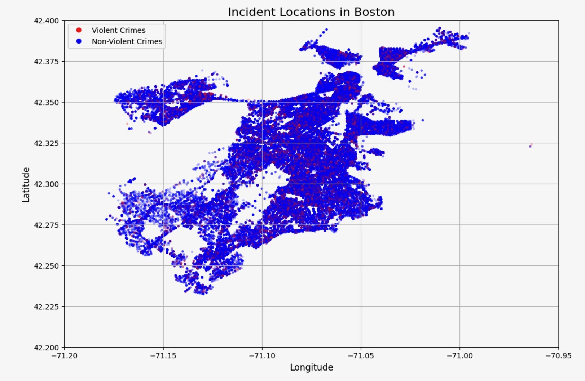
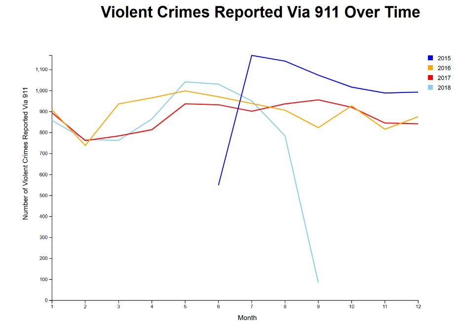

Introduction
Our topic of interest focuses on exploring crime in Boston using 911 calls for reference. As Northeastern students living in the city, it's
important for us to be well-informed about local crime and incidents patterns and trends to be aware of the city we reside in. By analyzing the
types of crimes and other incidents, the locations where they occur, and the times they are most frequent, we can gain a better understanding of
how crime affects various areas of Boston. This knowledge is valuable not only for personal safety but also makes for an ideal data science project.
With the range of features available from the dataset, we have the opportunity to create insightful visualizations and draw meaningful conclusions from
the data. We aim to uncover important insights of the nature of the crimes in Boston. For instance, throughout this project, we can uncover what types of
incidents are most common near the Northeastern Campus.
Data Overview
This data set sourced from Kaggle is provided by the Boston Police Department (BPD) through the Analyze Boston
organization to document initial details about incidents or crimes that occur in the city based on 911 calls
that are received by the organization. This data captures records from the new crime incident report system,
which includes certain attributes such as incident IDs, offense codes, district, time stamps, and more. There are
17 unique attributes including type of incident, date of occurrence, and district, and over 2000 records. Records
begin on June 14th, 2015 and go through September 3rd, 2018. We cleaned the data by removing the “shooting” column
which was null for all rows. We also added a column of 0’s and 1’s codifying each row as 0 if the crime was
non-violent, and 1 if it was violent. Lastly, we dropped all rows with null values to make sure the data was
comprehensive for each entry.
Static Visualizations
Visualization 1: Incident Count by Month for Each Year
.jpg)
This line graph depicts the number of incidents involving 911 calls/incidents warranting police presence throughout
each month of multiple years (2015-2018). Each line corresponds to a year of data, which ultimately allows for comparison
of monthly trends across the years. It seems that there is a peak in incidents and/or crime during the summer months, and
a drop in incidents during the winter months, meaning there is a potential relationship between weather and crime. It is
worth noting that for 2015 and 2018, there are gaps in the data, meaning for these two years the data is incomplete. It seems
that the data started being collected in May of 2015, and data collection was completed in September of 2018.
Visualization 2: Incident Locations in Boston

This scatterplot uses latitude and longitude data associated with each
incident to create a map of the city of Boston. The different colored points
are used to distinguish between violent and non-violent crimes. Where the colors are
more densely concentrated, 911 calls/crimes are more frequent. Where the points are less
opaque, there is less crime. This visualization gives insights into the safety of different
areas within Boston. It can be used to describe to inhabitants which areas are associated with
less crime and less incidents needing police presence. This data could be used to help the city
better allocate resources to improve public safety.
Visualization 3: Incident Frequency by Hour and Day of the Week

This heat map illustrates the frequency of different incidents by the hour of the day and day of the week.
As shown in the colorbar, a darker and more intense color signifies higher crime activities as denoted by
911 call data. The visualization explains that incidents are most frequent during the first few days of the
week, and that incidents are most likely to occur during the late afternoon or early evening. This indicates
that 911 calls and potential crimes are potentially tied to work schedules, as during the work week, especially
during typical commute times, 911 calls and crimes are most likely to occur.
Visualization 4: Violent Crimes Reported Via 911 Over Time (2016-2018)

This scatter plot, made using d3.js, depicts the total violent 911-reported crimes over the course of the year,
for the years 2015 through 2018. This visualization utilizes a channel of color to distinguish between each of
the four years. This is depicted in the legend in the top right. This visualization indicates that 2015 saw the
largest spike in violent crimes reported via 911, which happened between June and July. This year, 2015, ended with
the highest number of reported violent crimes at around 1,000 reports. The years 2016 and 2017 were most similar
in trends, seeing a positive slope, or increase, in violent crimes between the months February and May. The year
2018 shows the steepest change between any two months over the years 2015 and 2018, dropping from around 780
reports to less than 100 reports. Although there is insufficient data reportings across all of the years in
this data, there is reason to believe that there may be a trend between month and violent crimes.
Summary and Future Work
Through the analysis of the “Crimes in Boston” dataset, valuable insights into the patterns of distribution of crimes and incidents in the city of Boston
(based on 911 call data) were found. The visualizations presented reveal analysis through both spatial and temporal trends, which can be leveraged by local
law enforcement and city planners to improve public safety and resource allocation.
One key finding from the interactive “Top Crimes by District” graph is the variation in types of incident across different districts. For instance, District D14
sees more motor vehicle accidents reported via 911, while District A1 experiences higher rates of larceny reported via 911. This analysis could be useful for
justification of government funding for additional road work and signage for District D14, and increased patrolling of District A1. These insights allow for more
targeted resource allocation by the police department as well, ensuring that each district receives the necessary focus based on the type of crimes more prevalent
in that area. Furthermore, the “Incident Frequency by Hour and Day of the Week” visualization offers critical information for anticipating shifts in crime
throughout the day. For example, early evening hours tend to have higher 911 reports for larceny incidents, while medical assistance calls are more frequent
at nighttime. This pattern indicates that greater resources should be allocated and anticipated through the police department for the latter half of the day
where the peak of incidents are most likely to be called in.
The heatmap visualization illustrates the correlation between crime frequency and both time of day and weekday, showing that crime peaks earlier in the week
via (911 reports), and later in the afternoon and early evening. This trend suggests that crime may be influenced by work schedules, which could prompt further
investigation and analysis into factors such as economic or social stressors during these times. The scatterplot map of Boston provides a geographic perspective
on crime distribution, highlighting high-crime areas and offering the possibility for improving safety measures or patrol planning in areas with dense violent
and non-violent crime activity. Similarly, the line graph on crime trends over multiple years shows a clear seasonal pattern, with 911-reported incidents
spiking during warmer months, suggesting a potential link between weather and crime rates.
Future research and analysis could include expanding the dataset timeframe to include additional years, which would allow for greater comprehensive trend
analysis and a deeper understanding of crime dynamics over longer periods. Additionally, incorporating other data sources, such as socioeconomic and demographic
factors, could offer more insights into the root causes of crime spikes. More advanced interactive features, such as predictive crime models or real-time data
integration, could also be developed to present important findings which assist law enforcement and government agencies in making proactive decisions and increasing
funding in areas heavily impacted by crime.
Overall, the visualizations provide a clear and detailed understanding of crime patterns in Boston, enabling more informed decision-making and better resource
management. As the data collection improves and expands, these insights will become even more valuable in shaping the future of public safety in the city.